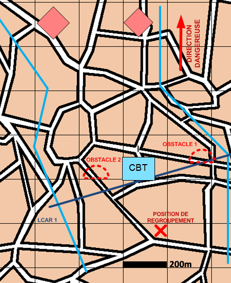

NIVEAU : Automate
ARME : Melee
MISSION : Donner Coup Arret
NIVEAU : Automate
ARME : Melee
MISSION : Donner Coup Arret
Schéma de modélisationDonner Un Coup D'Arrêt |
Paramètres obligatoiresFuseauZone de responsabilité. Direction Dangereuse Orientation privilégiée des capteurs. Ligne de Coup D'Arrêt [LCAR] Ligne à partir de laquelle les unités vont effectuer le coup d'arret. Position de regroupement Position à rejoindre après le coup d'arret. |
|
Paramètres optionnelsPréparation du terrain |
||
 |
Fiches missions |  |